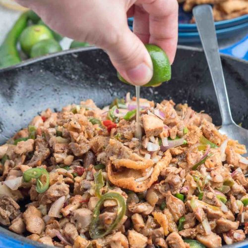
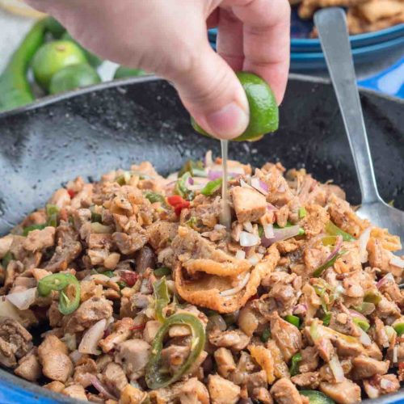

Pork sisig is a popular Filipino dish. It can be considered as a main dish or an appetizer. The composition of this dish is mainly of pig’s parts such as minced pork meat, ears, and face. Chicken liver, onions, and chili peppers are also added.
Ingredients
- water
- 1 kilo pork jowl (face)
- 2 tablespoons vegetable oil
- 1 large onion, minced
- 3 cloves garlic
- 1 ginger, minced
- 3 pieces finger chilies (siling pangsigang)
- 3 tablespoons soy sauce
- 3-5 pieces calamansi
- 1/4 kilo chicken liver
- salt and pepper, to taste
Procedure
Step 1: In a big pot, place water and bring it to a boil. Water should be enough to cover the meat. Place pig's ears and pork jowl (or pork belly) then simmer for 40 minutes to 1 hour (or until tender). Season with salt and pepper.
Step 2: Remove the boiled ingredients from the pot then drain excess water.
Step 3: Grill the boiled pig's ears and pork jowl (or pork belly) until cooked.
Step 4: Chop the pig ears and pork belly into diced pieces.
Step 5: In a wide pan, heat the oil. Add the onions and cook until translucent.
Step 6: Add the ginger, garlic and green finger chilies and saute.
Step 7: Add the pig brains or chicken liver. Mash the chicken liver while cooking it in the pan.
Step 8: Add the chopped pig ears and pork belly. Cook for 10 to 12 minutes.
Step 9: Season with soy sauce, salt and pepper.
Step 10: Transfer to a serving plate. Top with chopped green finger chilies.
Step 11: Serve hot or serve on a hot sizzling plate and Satisfy your cravings!